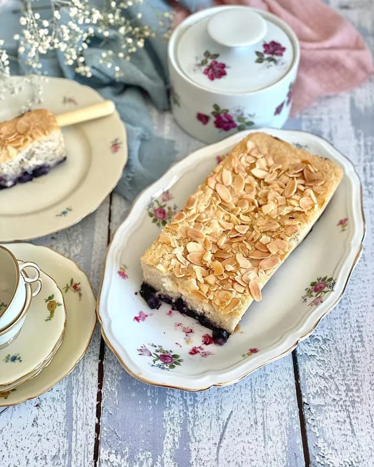
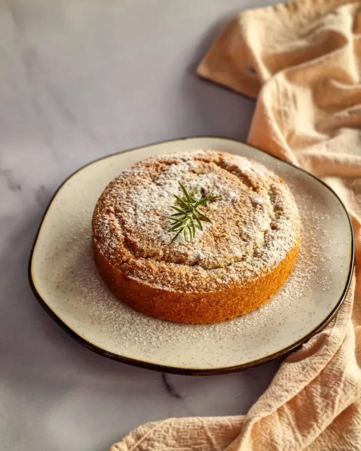
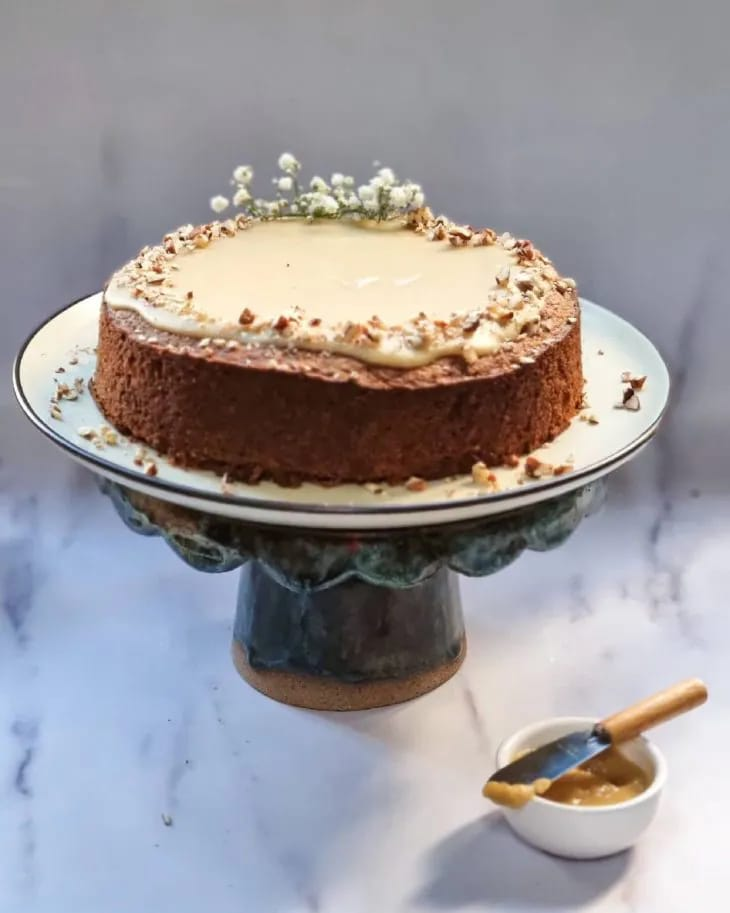

-
Bolo vegano de limão siciliano e mirtilos
Ingredientes
1/3 de xícara de chá açúcar demerara, 1/3 de xícara de chá açúcar demerara, 2 colheres de sopa de sumo de limão siciliano, 3 colheres de sopa de óleo vegetal, 3/4 de xícara de chá de água, 1/2 colher de chá de extrato de baunilha, Raspas de limão siciliano, 1/2 xícara de chá de farinha de arroz (peneirada), 1/4 de xícara de chá de polvilho doce (peneirado), 1/4 de xícara de chá de farinha de amêndoas (peneirada), 1 colher de chá de fermento químico, 1/2 xícara de chá de mirtilos orgânicos frescos, 1/3 de xícara de chá de amêndoas laminadas.
-
Bolo de laranja com alecrim vegano
Ingredientes
120 g de mix de farinhas sem glúten, 100 g de farelo de aveia, 150 g de açúcar demerara, 70 ml de suco de laranja, Raspas de laranja a gosto, 180 ml de água, 100 ml de azeite de oliva, 2 ramos de alecrim sem o talo, 12 g de fermento químico, 1 colher de sopa de vinagre de maçã, 1 pitada de sal, Açúcar a gosto, Ramos de alecrim para finalizar.
-
Bolo de canela vegano sem glúten
Ingredientes
100 g de açúcar demerara, 80 g de açúcar mascavo, 100 ml de leite de coco, 70 ml de óleo de girassol, 100 ml de água, 140 g de mix de farinha sem glúten, 160 g de farinha de castanha-de-caju, 10 g de canela, 30 g de linhaça dourada, 10 g de psyllium, 1 colher de café de vinagre de maçã, 1 colher de café de extrato de baunilha, 1 colher de sopa de fermento químico em pó, 1 pitada de sal, 100 g de chocolate branco vegano, Creme de castanha pronto.